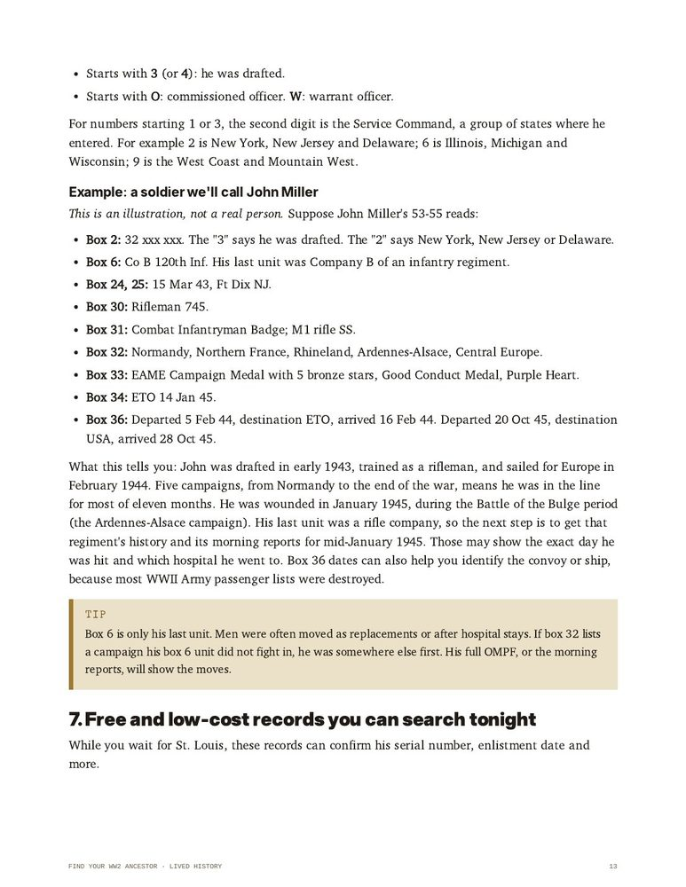
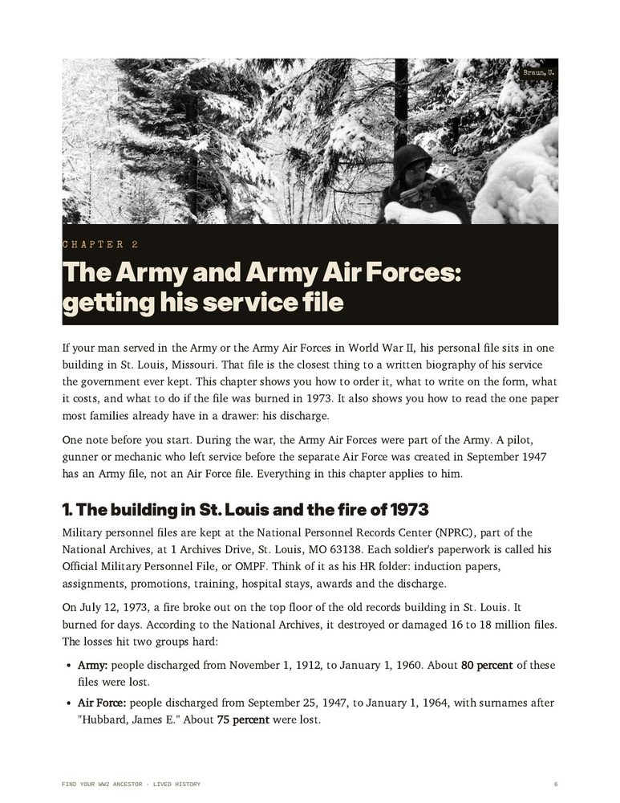

Most families have a name, a photo in uniform and a story that was told a few times. That's usually where it stops, because the records are spread across archives, forms and websites nobody explains.
Find Your WW2 Ancestor is a step-by-step guide that walks you through it in plain English:
- Where his papers are hiding in the family, and how to read what you find.
- How to order his official service file, what to write on the form, what it costs, and what to do if it was damaged in the 1973 St. Louis fire.
- How to read his discharge paper box by box: his unit, his campaigns, his medals, his dates overseas.
- How to follow his unit day by day with the Army's daily records and the official histories.
- Navy, Marines and Coast Guard records.
- If he died, went missing or was a prisoner: where to look and who to ask.
- If he served for Britain, Canada, Australia or Germany.
- How to turn it all into his story, with printable worksheets: Soldier Profile, Family Interview, Records Request Tracker, Research Log and Timeline.

A page from the guide: his discharge paper, decoded box by box.

72 pages. Every form, website and fee was checked in 2026. Digital PDF, instant download, worksheets you can print at home.
Add it to your order for $39.90. It's charged to the same payment you just made, and nothing else is added.